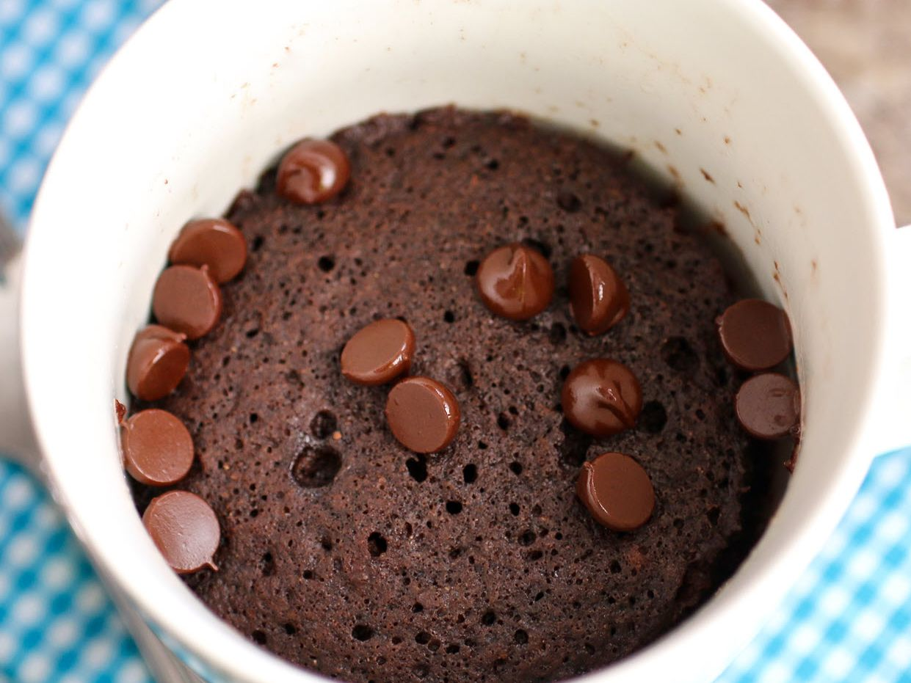

Three Two One Mug Cake

Description
A simple go to recipe for when you're looking for something small, sweet, and all you've got is some cake mix, hopes, and dreams. All you're going to need is some cake mix, some water, a mug, and a microwave. It's just that simple!
Ingredients
- Your favorite cake mix flavor
- Angel Food cake mix
- 2 tbsp of water
Steps
- Take your two cake mixes and combine them into a resealable bag or bowl.
- Measure out 3 tbsp of your combined cake mixes and place into a mug.
- Add 2 tbsp of water to your mug and mix to combine.
- Place your mug in the microwave and cook for 1 minute.